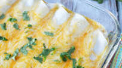

Enchiladas

Description
We have the easiest Sour Cream Chicken Enchiladas Recipe
packed with chicken, cheese and an amazing sour cream sauce.
These are the best Sour Cream Chicken Enchiladas and they get
even better the next day and freeze great.
Ingredients
- Chicken Breasts, cooked and shredded
- Onion
- Rotel (or green chilies)
- Homemade Taco Seasoning (or half packet if using store bought)
- Cream of Chicken Soup
- Sour Cream
- Milk
- Shredded cheese (any kind will do but we love Monterey jack cheese)
- Tortillas (corn tortillas or flour tortillas)
Steps
- Preheat oven to 350 degrees F.
- In a skillet, brown the chopped onions until soft.
- Add in the shredded chicken, taco seasoning, Rotel, and half the can of cream of chicken soup.
- Cook over medium high heat until mixed thoroughly and heated through.
- Spoon the chicken mixture evenly into the tortillas. I heat the tortillas in the microwave for 30 seconds to make them more pliable.
- Roll and place in a 9×13 baking dish with the seam side down.
- Continue to do this until your pan is full.
- Meanwhile, mix the remaining cream of chicken soup, sour cream and milk in a bowl until combined. If the sauce is too thick, add a small amount of chicken broth to thin the sauce out
- Pour mixture over your rolled tortillas. Sprinkle with the shredded cheese on top.
- Bake for 20 minutes until heated through.